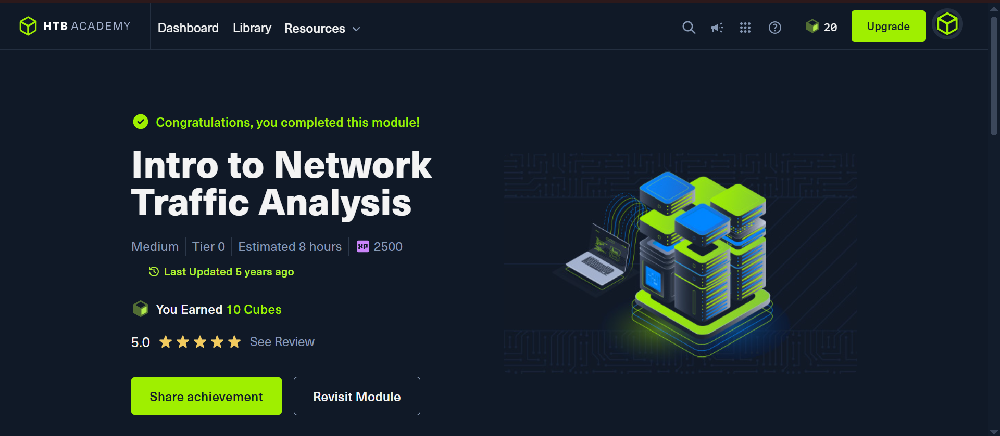
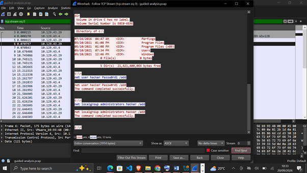
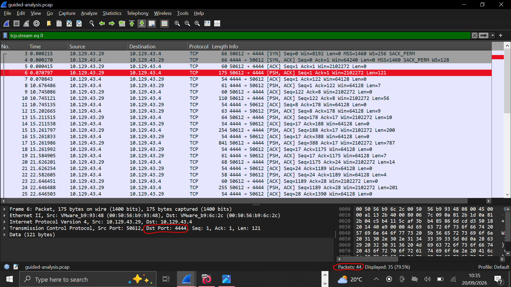

HTB Academy — Introduction to Network Traffic Analysis
Problem Statement
Network Traffic Analysis (NTA) is the practice of examining network traffic to characterize common ports and protocols, establish a baseline for an environment, monitor and respond to threats, and ensure the greatest possible insight into an organization's network. The objective of this module was to build foundational fluency with packet inspection tools — tcpdump, TShark, and Wireshark — and to apply a structured analysis workflow against real PCAP files in a lab environment.
The task was not just to answer questions correctly, but to demonstrate the underlying workflow: ingest traffic, reduce noise via filtering, analyze and explore, then detect and alert.
Environment & Setup
The lab was delivered through HTB Academy's browser-based environment. Remote hosts were accessed via xfreerdp to perform live packet captures and forensic analysis directly inside the target environment. Tools used: Wireshark (GUI analysis), TShark (CLI packet analysis), tcpdump (capture and filtering), and termshark (terminal Wireshark interface).
Approach
- Networking fundamentals recap — Layers 1–4. Consolidated the OSI model (7 layers) and TCP/IP model (4 layers). Distinguished link-layer addressing (MAC, layer 2) from network-layer addressing (IPv4, 32-bit, layer 3), and contrasted connection-oriented TCP with connectionless UDP. Confirmed TCP's three-way handshake sequence: SYN → SYN/ACK → ACK.
- Application-layer protocols — Layers 5–7. Mapped default behaviors for FTP (active mode, ports 20/21), SMB (TCP/445), HTTP (TCP/80), and HTTPS (TCP/443, TLS-wrapped application data).
- tcpdump fundamentals. Practiced core switches:
-i(interface),-n(no hostname resolution),-v(verbose),-X(hex + ASCII),-c(packet count),-r(read from file),-w(write to file),-(pipe to another process). Usedwhich tcpdumpfor installation verification andmanfor reference. - Capture vs. display filters. Distinguished capture filters (applied before capture, via
-fin TShark) from display filters (applied after). Combined filters withand,or,not. Practiced host-based filters (host 10.10.20.1) and protocol negation (not icmp). - Wireshark deep-dive. Explored pane structure (packet list, packet details, packet bytes), statistics and analyze menu tabs, and stream reconstruction via Follow TCP Stream. Extracted files from HTTP traffic (including a JPG hidden in a capture).
- Guided analysis workflow. Applied the full NTA workflow to a suspicious-traffic PCAP: identified a newly created user account (
hacker) via reconstructed stream data, counted total packets, and flagged a non-standard service port (4444 — a classic reverse-shell indicator). - Decrypting RDP connections. Reconstructed an RDP session and identified the initiating account (
bucky) from captured handshake artifacts.
Tools Used
Key Findings
- Server identification in capture: From
question-1.png, the server was identified as174.143.213.184— distinguished from the client by SYN-first behavior and response timing. - Port assignment in a full TCP handshake: In the display-filter exercise, the client used ephemeral port
43806to connect to server port80, confirming the standard server-fixed / client-ephemeral convention. - DNS server identification: On the lab network segment, the DNS resolver was
172.16.146.1, identified from observed DNS query/response pairs in the capture. - Suspicious port flagging: In the guided analysis PCAP, port
4444stood out as anomalous — no legitimate service uses it by default, and its presence alongside a newly createdhackeraccount was the primary red flag. - RDP account attribution: Even with encryption, RDP session metadata (cookie negotiation, handshake artifacts) allowed attribution of the session to user
bucky. - Total scope: The guided analysis PCAP contained
44packets — small enough to review exhaustively, reinforcing that thorough manual analysis beats automated tooling when scope is manageable.
Screenshots
Screenshots from the module are included in the full PDF report below. You can also drop additional images into assets/labs/ and add more <figure> blocks here.



Key Lessons Learned
- Manual packet analysis beats automated tooling when scope is small — 44 packets reviewed by hand taught more than an IDS alert ever could have.
- Capture filters and display filters serve different phases of analysis. Choosing the right one at the right time is the difference between a clean investigation and a wall of noise.
- Layer 2, 3, and 4 addressing each tell a different part of the story. A single packet contains contributions from all three, and the handshake order reveals which side is the server.
- Follow TCP Stream is one of the highest-leverage features in Wireshark for recon work — it turns raw packets into readable conversation, and that's where human-readable evidence lives.
- Port 4444 is not a "protocol" flag, it's a habit flag — it shows up in reverse shells because attackers default to it. Knowing common tooling defaults is a real detection advantage.
- Even encrypted protocols leak useful metadata: RDP session negotiation was enough to attribute the session to a specific user without decrypting the payload.
- Working knowledge of tcpdump and TShark matters even when Wireshark exists — headless and remote environments demand CLI fluency.